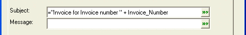

ReportMailer
Overview
The ReportMailer action breaks a report in component reports and sends each component as a PDF file attachment. The email address for each email is obtained from a field in the table on which the report is based.
Description
The first page of the Script Genie contains three tabs. On the Layout Name tab you must pick a value from the Select Layout Type list. The default value is "Report".
Next, you must select the specific layout that you wish to use from the list box below it.
On the Email Fields tab in the 'TO' address field you must specify the table field that contains the email address data. Optionally, you may select the table fields that will provide data for the 'CC' address and 'BCC' address fields.
You may optionally enter text or expressions for the Subject and Message fields. as illustrated in the picture below, it is possible to combine text and an expression using a table field to produce customized content for each email. If you have created additional email profiles, you may optionally select one from the Email Profile list.

The Optional Settings tab sets your preferences for logging. There are three techniques for logging:
Update a field in the primary table with a status.
Create a log file.
Save a copy of the sent message.
Check the Update a field in the primary table box if you want to record status with an expression in a table. as illustrated below, the success and failure expressions can be text or can be a combination of functions, field values, and text that results in a character value.
Check the Create a log file? box if you want to create a log file. Accept the default table or select a new table in the Log file name field.
Check the Store Email in the standard Alpha Five email Out Box? if you want to save a copy of your sent messages.
Click Next > to continue to the next page of the ReportMailer Genie. Select the method of record selection, then enter any additional parameters, such as filter and order expressions, that the genie requires. If necessary, consult the Alpha Five User Guide for more information about the Filter Builder and Order Builder utilities.
Click Next > to continue to the next page of the ReportMailer Genie. Optionally modify the default comment that describes what this step of your action script does.
Click Finish.
See Also
Creating and Using an Email Smart Field, Sending and Receiving Email, Email, Email Profiles, Email Functions and Methods